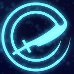

CLAUS

Deliverance
Cada cuatro ataques básicos Claus golpea a todos los enemigos en el área.
Quick slash
Al recibir un ataque contrataca a la unidad enemiga y a todas las cercanas.Full Charged Slash
Al tener la energía cargada al máximo, Claus entra en un estado en el que todos sus ataques hacen el doble de daño y en un área mayor.
Claus ha sido un líder innato desde niño. En edades tempranas destacó por su fuerza y agilidad
sobrenaturales. Su alta disposición a pelear de la primera fila lo hiso subir de rango hasta
convertirse en capitán. Su fuerza excepcional, madurez y capacidad estratétigaca lo convierten
en una gran adición para cualquier escuadrón.